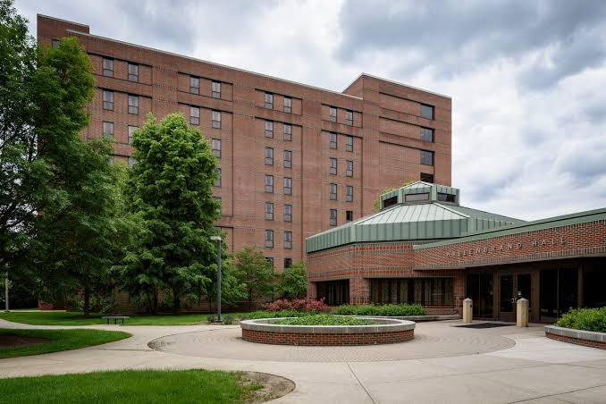

Data Science · AI · Statistics · Real Estate
I am driven by
|
Student at Purdue University studying Data Science, Applied Statistics, and AI with a minor in Real Estate.

About Me
Hi, I'm Nathan Walsh
I'm a senior at Purdue University pursuing a B.S. in Data Science, Applied Statistics, and Artificial Intelligence with a minor in Real Estate. I maintain a 3.75 GPA and have been named to the Dean's List every semester.
I enjoy asking questions, exploring data, and finding patterns that aren't immediately obvious. From commercial real estate and finance to product management and technology, I'm interested in using analytics to better understand the world around us.

Purdue University — West Lafayette, IN
Experience
Corporate Partners Teaching Assistant
The Data Mine, Purdue University · West Lafayette, IN
- Coordinate priorities and deliverables for a 14-student team as the primary liaison between students, faculty, and corporate mentors, facilitating weekly lab sessions, mentor meetings, and Agile sprint planning.
- Guide the team's research and development of an AI-powered home remodeling software for the James Hardie product portfolio, integrating generative AI, recommendation systems, and computer visualization to personalize renovation suggestions based on homeowner preferences.
Digital Technology Intern
Ecolab — Digital Product Management Team · Naperville, IL
- Conducted customer and stakeholder research, along with user analytics to identify high value applications for an AI-powered data visualization solution, redirecting an ambiguous project idea toward product roadmap aligned use cases.
- Evaluated buy versus build alternatives for data visualization capabilities, analyzing the costs and business implications of developing an internal AI solution versus adopting a third-party platform.
- Translated customer insights into actionable development priorities, collaborating with engineering and product teams to define requirements for charting and editing features.
- Presented product recommendations and a working proof of concept demonstration to leadership, positioning the AI visualization agent as a reusable foundation across ECOLAB3D products.
College of Science Data Assistant
Purdue University College of Science · West Lafayette, IN
- Delivered reports and dashboards translating academic and operational data into actionable insights for administrative decisions.
- Collected, cleaned, and validated student and program data across multiple sources using Excel, Tableau, R, and Python to ensure accuracy and consistency for institutional reporting.
- Improved data workflows by documenting processes and building more efficient approaches to recurring reporting and analysis tasks, increasing accessibility of data for stakeholders.
Projects
CRE Asset Management Platform
Django web app managing commercial real estate portfolios, tracking tenant leases and dynamically calculating NOI, Cap Rate, and occupancy rates via raw SQL queries and a live dashboard.
Undergraduate Data Science Research
LSTM model built for BASF leveraging historical forecast data to predict long-term weather patterns and grape yield, achieving ~83% classification accuracy after feature engineering and tuning.
MLB Game Outcome Predictor
Logistic regression classifier predicting single-game MLB outcomes from large-scale historical data, achieving an 8% accuracy improvement over the baseline in balanced scenarios.
Red Wine Quality Analysis
Statistical analysis and logistic regression models in R to predict wine quality, identifying volatile acidity and alcohol content as key predictive features via ANOVA.
Coursework
Look up the course number to learn more about each course. For example, I would look up "Purdue CS 253000" to find more information about Data Structures and Algorithms.
Data Science
- STAT 35500 - Statistics for Data Science
- CS 43900 - Data Visualization
- CS 44000 - Large Scale Data Analytics
Statistics
- STAT 41700 - Statistical Theory
- STAT 50600 - Stat Programming
- STAT 51200 - Applied Regression Analysis
AI
- MA 35100 - Linear Algebra
- CS 37300 - Data Mining and Machine Learning
- CS 47100 - Introduction to Artificial Intelligence
Computing
- CS 25300 - Data Structures and Algorithms
- CS 34800 - Information Systems
- CS 38100 - Analysis of Algorithms
Real Estate
- MGMT 37000 - Real Estate Fundamentals
- MGMT 37500 - Real Estate Law
- REAL 43901 - Real Estate Inv & Dev
Business
- MGMT 20000 - Accounting
- ECON 21000 - Principles of Economics
- MGMT 30400 - Financial Management
Skills
Technical Skills
Python, R, SQL, Java, SAS
Data & ML
Pandas, NumPy, Scikit-learn, TensorFlow, Keras
Web & Software Dev
Django, Git, HTML, CSS, Microsoft Azure
Analytics & Tools
Excel, Pendo, Tableau, RStudio, Jupyter, PowerPoint, Word
Achievements
Purdue Presidential Scholarship
Prestigious merit-based award for high-achieving incoming students at Purdue University.
Dean's List — Every Semester
Selected every semester for outstanding academic achievement and a cumulative GPA of 3.75/4.00.
National Collegiate Hurling Champions 2025, 2026
Player for the Purdue Hurling Club that won the national collegiate championship in 2025 and 2026.
Life Outside the Classroom
Purdue Hurling Club
Hurling is one of the world's oldest and fastest field sports, and it's been a big part of my time at Purdue. In 2025 and 2026 our team won the National Collegiate Hurling Championship. In addition to hurling, we also play Gaelic football. These Irish sports have sharpened my ability to collaborate with others to achieve a common goal, translating directly into my approach with my work.

Nathan Walsh in Action - National Champions 2026
Purdue Real Estate Society
Through the Real Estate Society I engage with workshops and industry panels focused on commercial real estate fundamentals and career paths. Networking with professionals and alumni has given me direct exposure to how data analytics and AI are reshaping the industry. The Real Estate Society is the main reason why I chose to minor in real estate. It has provided me with many opportunities to grow and learn professionally.

Photo Taken at Real Estate Society Trip to Indianapolis
College of Science Ambassador
As a College of Science Ambassador I represent Purdue's College of Science during campus visits and outreach events. I engage with prospective students and their families to help give them an honest and enthusiastic picture of Purdue's College of Science. When I was a prospective student in high school, the amabassadors that I talked to were a big reason why I chose to major in data science. Having this opportunity to have the same impact on future students has been one of the most rewarding parts of my Purdue experience.

My Official Ambassador Headshot
The Data Mine
The Data Mine is an interdisciplinary learning community that provides students with hands-on data science education. It has been one of the most formative parts of my academic experience, as I wrap up my 4th year of involvement. I have been a student taking classes, a researcher for a Corporate Partners project with BASF, and now a teaching assistant for a Corporate Partners project with James Hardie. The Data Mine has given me the opportunity to work on real-world data science projects with corporate partners, and it has been an invaluable experience that has helped me grow as a data professional and as a person.

Hillenbrand Hall, Home of The Data Mine
Let's connect
I am open to discussing opportunites, lending a hand, or simply having a conversation.